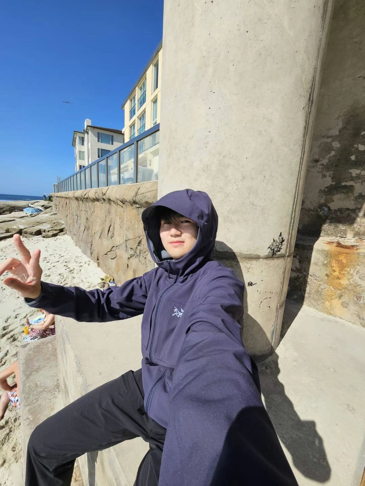
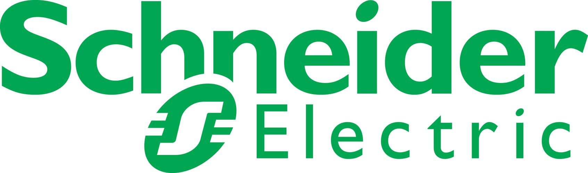

Image-Based Visual Servoing for Enhanced Cooperation of Dual-Arm Manipulation
Zizhe Zhang, Yuan Yang*, Wenqiang Zuo, Guangming Song, Aiguo Song, Yang Shi
RA-L (submitted), 2024
PDF
Zizhe/dzɪ drɜː/ Zhang张子哲 I'm currently a first year EE master student at Penn Engineering. |
 (at La Jolla, San Diego, US) |
|
[Nov. 2024] Joined Figueroa Robotics Lab @ Penn. [Oct. 2024] Finished and submitted my first paper to IEEE RA-L. |
|
University of Pennsylvania, Philadephia, United States (Aug. 2024 - 2026) M.S.E. in Electrical Engineering (expected in 2026) | ||
|
UC San Diego, San Diego, United States (Jan. 2023 - Mar. 2023) Visiting Student | ||
|
Southeast University, Nanjing, China (Sep. 2020 - Jun. 2024) B.E. in Measurement and Control Technology and Instruments |
|
Schneider Electric, Shanghai, China (Jun. 2023 - Aug. 2023) Technical Intern |  | |
Image-Based Visual Servoing for Enhanced Cooperation of Dual-Arm Manipulation
Zizhe Zhang, Yuan Yang*, Wenqiang Zuo, Guangming Song, Aiguo Song, Yang Shi
RA-L (submitted), 2024
PDF
Like playing CS2 and Football Manager.
Like playing soccer, used to be a player of the varsity soccer team.